Módulo 3 | Aula 4
Prática SIG I – QGIS e adequação de base de dados
Preparando os dados para o QGIS
Base cartográfica (espacial)
A base cartográfica, também chamada de shapefile (.shp), contém a geometria das unidades de análise (ex.: os polígonos dos municípios do Brasil). Malhas municipais, estaduais e de setores censitários podem ser baixadas gratuitamente do site do IBGE.
Para a prática dessa aula vamos utilizar o arquivo: BR_Municipios_2024. Este arquivo foi construído e disponibilizado pelo IBGE e já está organizado para este exercício. Baixe o arquivo no Educare: https://educare.fiocruz.br/resource/show?id=AyVQ0laQ.
Mas você pode ter acesso a ele no link: https://www.ibge.gov.br/geociencias/downloads-geociencias.html.
organização_do_território > malhas-territoriais > malhas_municipais > município_2024 > Brasil > BR_Municipios_2024.zip
Crie um diretório na sua máquina chamado “PraticaQGIS” (sem espaço) em um caminho que você memorize.
Normalmente, o Windows baixa o arquivo na pasta de Download. Repasse o arquivo baixado para a pasta que você criou “PraticaQGIS”, clique com o botão direito no arquivo e vá na opção extrair.
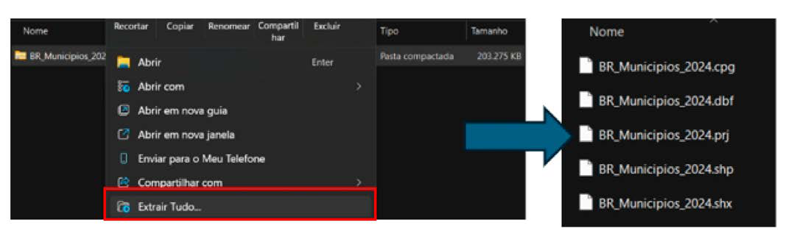
Adicionando os dados no QGIS
- Inicie o QGIS.
- Abra um novo projeto em branco.
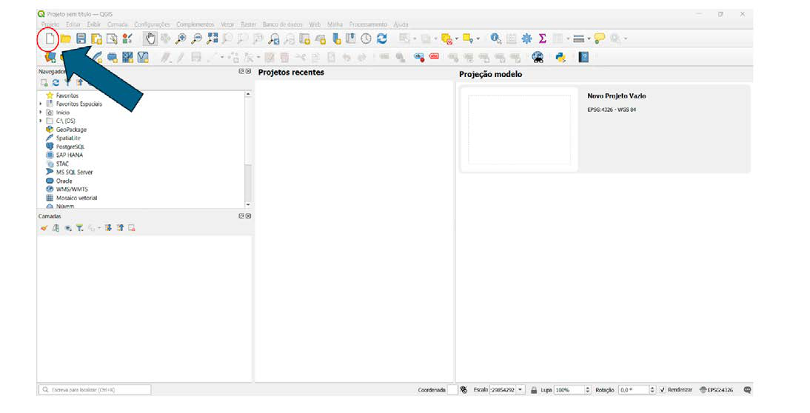
- Para abrir os arquivos, vá na barra superior e clique em Camada > Adicionar Camada > Adicionar Camada Vetorial. Busque o diretório onde o arquivo foi salvo clicando nos três pontos em Fonte > Base de vetores. Configure o formato de dado que está buscando adicionar, neste caso será ‘shapefile’.
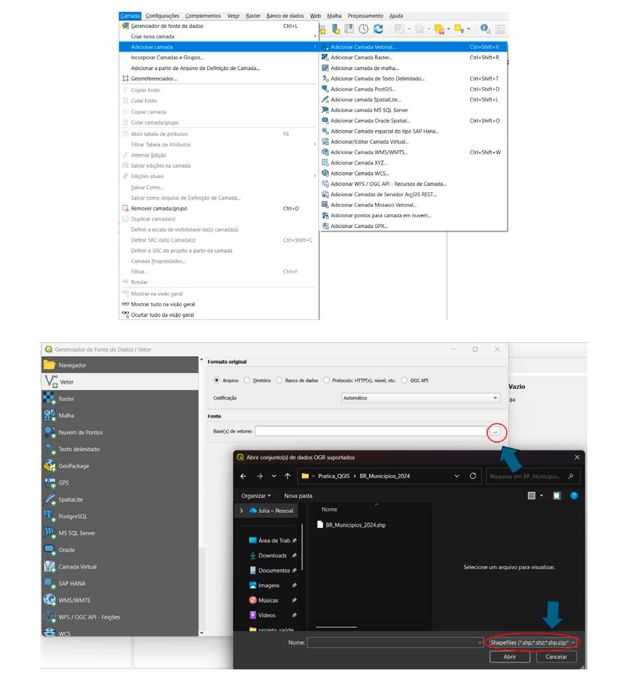
Adicionar Camada Vetorial e seleção do shapefile" loading="lazy" />- Clique no dado > abrir. Depois clique em Adicionar na parte inferior da janela.
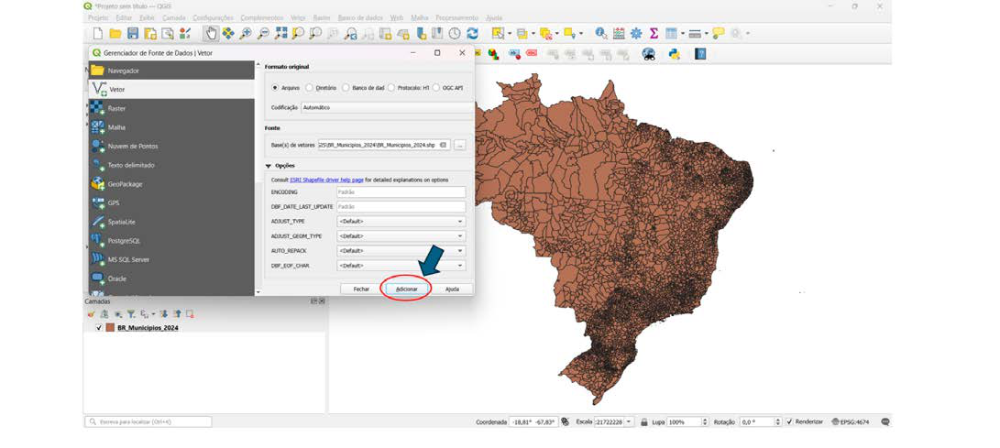
Antes de começar a trabalhar com os dados é importante verificar a tabela de atributos do dado, que é a componente .dbf da base de dados.
Vamos explorar a tabela da camada dos municípios, clicando com o botão direito na camada e clique em Abrir tabela de atributos.
Botão direito no dado > Abrir tabela de atributos
Nela, conseguimos saber quais informações temos de cada registro. Neste caso, cada linha da tabela é referente a um município do Brasil com seu código único, nome, estado, região e área.
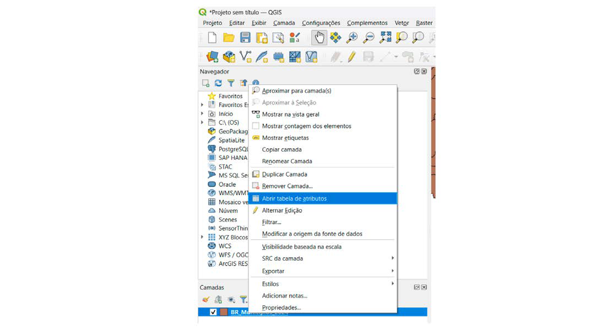
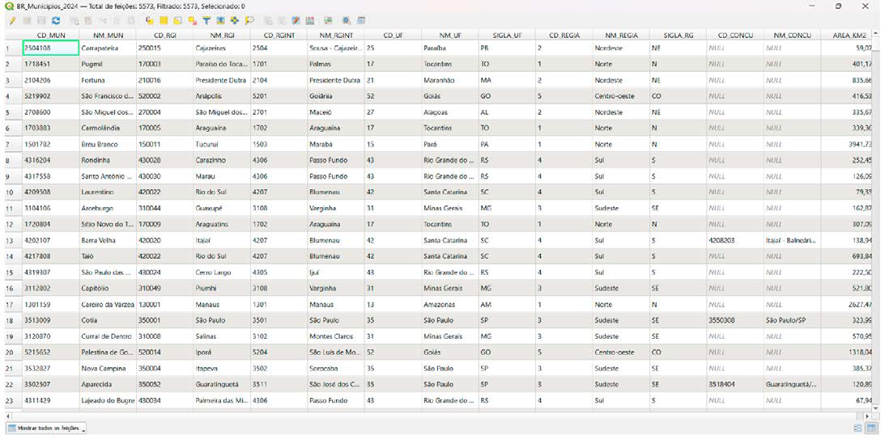
Antes de começar a trabalhar com os dados, é importante verificar o sistema de coordenadas e se possui alguma projeção atribuída ao dado. Para dados oficiais brasileiros, os dados devem estar em SIRGAS 2000.
Na janela “Camadas”, selecione a shape BR_Municipios_2024 e com Botão direito > Propriedades > Informações.
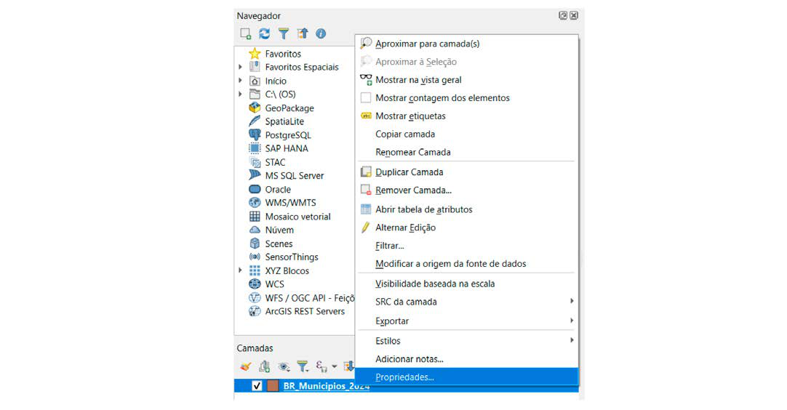
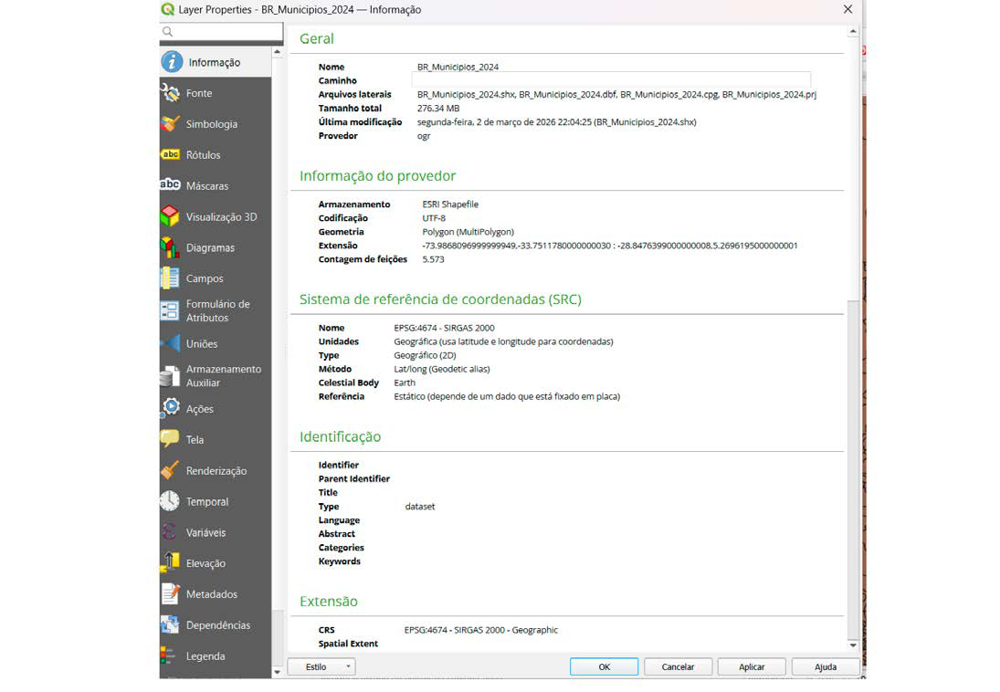
A Base de Dados de Saúde (Atributos)
Para este exercício, usaremos o arquivo: taxa_dengue.xlsx.
Mas você pode baixá-lo como já viu na disciplina Fontes de dados, pelo TabNet do DATASUS como tabelas em formato .csv ou planilhas Excel (.xls, .xlsx).
- Acesse o Tabnet https://datasus.saude.gov.br/informacoes-de-saude-tabnet/;
- Epidemiológicas e Morbidade > Doenças e Agravos de Notificação - 2007 em diante (SINAN) > Dengue 2014 em diante;
- Vá até o rodapé da página e selecione a Abrangência Geográfica > BR por Região, UF e Município;
- Para linha selecione os municípios de notificação e para as colunas os anos observados de 2024 a 2025;
- Vá no final da página e clique em Mostrar para ter uma pré-visualização da tabela antes de baixar. No final da página clique em ‘Cópia como .csv’. Salve o dado baixado na pasta PraticaQGIS.
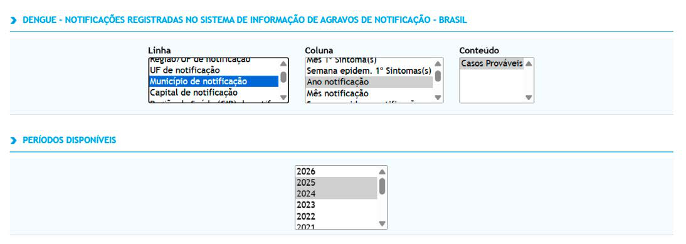
Anteriormente, baixamos a tabela de número de casos de dengue notificados por ano para os municípios do BR. Suponhamos que você queira calcular a taxa anual de dengue para cada município e para isso precise adicionar à sua tabela a população.
Dados de população são gerados pelo IBGE. Para obter dados da população por município de anos não censitários basta ir em https://sidra.ibge.gov.br, selecionar os anos que deseja (no caso da prática selecionamos 2024 e 2025 e municípios como nível territorial).
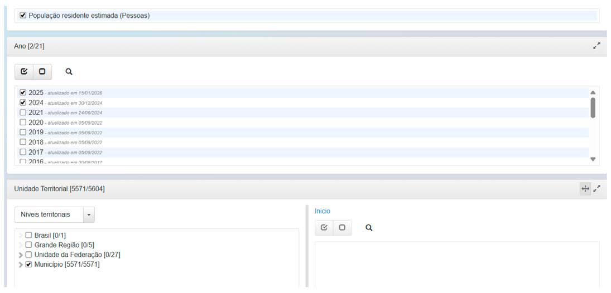
Passos para Adequação
Limpeza da Tabela: Abra o arquivo em um editor de planilhas (Excel, LibreOffice Calc). Remova linhas de cabeçalho e rodapé desnecessárias, mesclagens de células e caracteres especiais dos nomes das colunas. A primeira linha da tabela deve conter os nomes das colunas (variáveis), e as linhas seguintes, os dados.
Salvar em Formato Adequado: O formato mais compatível para importação no QGIS é o CSV (Comma-Separated Values). Ao salvar, escolha a opção “CSV (separado por vírgulas)” ou “CSV (UTF-8)”. O UTF-8 é recomendado para garantir que caracteres como acentos e “ç” sejam preservados (PROGRAMMING HISTORIAN, [s.d.]).
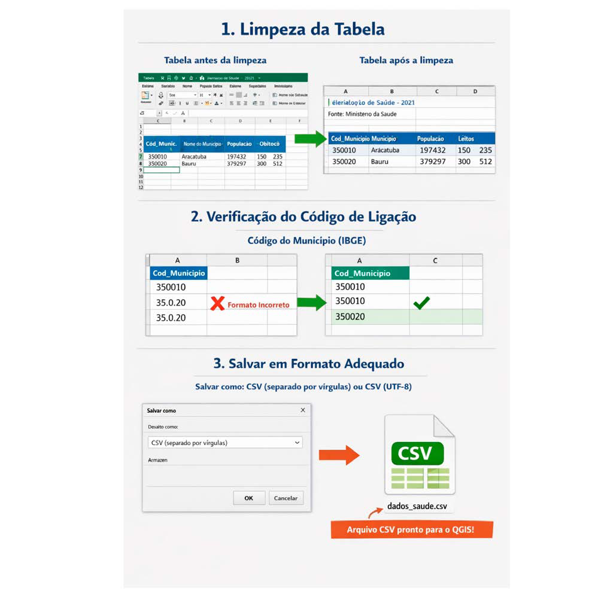
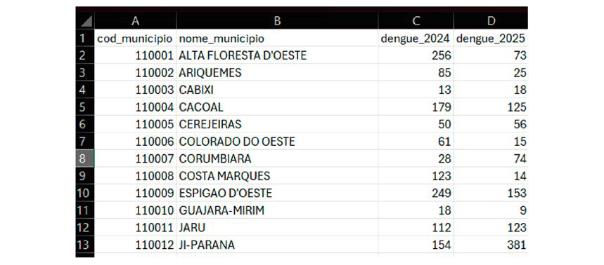
Para acompanhar como tratar o dado por completo e o cálculo da taxa, clique aqui!
- Para adicionar os dados tabulares no QGIS, na barra superior vá em Camada > Adicionar Camada > Adicionar Camada de Texto Delimitado. Clique no arquivo dentro do diretório e Abrir.
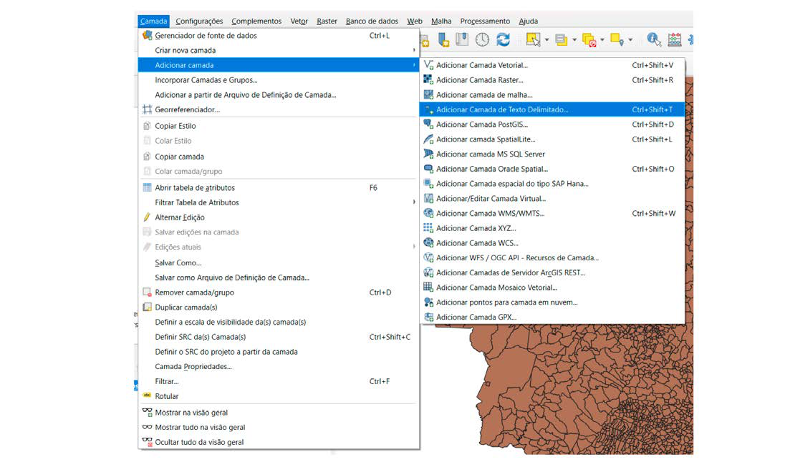
Adicionar Camada de Texto Delimitado" loading="lazy" />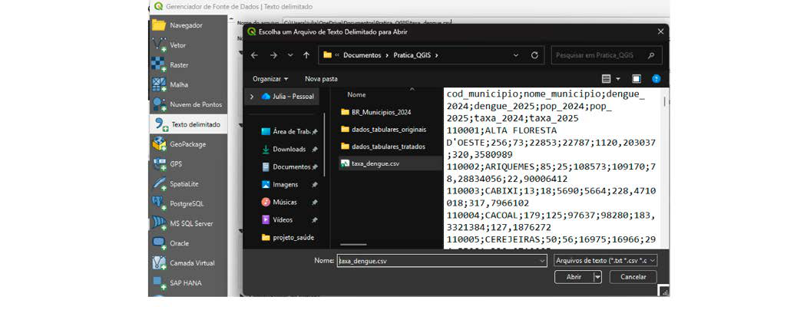
- Antes de adicionar o dado, configure a entrada com delimitação por ponto e vírgula, tipo de dado sem geometria e o código do município no formato string (texto). Os demais campos de casos, população e taxa como numérico.
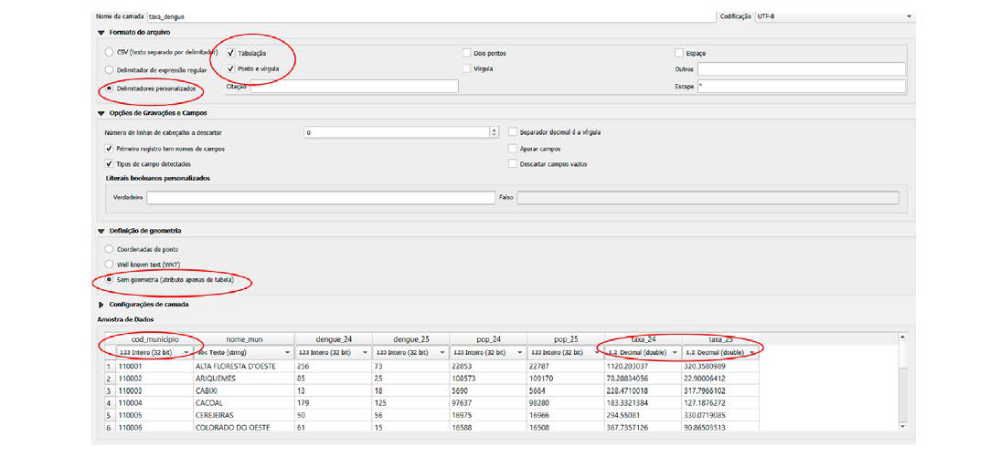
Adequando a tabela de atributos dos dados
Verificação do Código de Ligação: Para unir a tabela de saúde a um mapa, precisamos de um campo chave (ou código de ligação) comum a ambas as bases. Para dados municipais no Brasil, o código ideal é o código do município de 6 ou 7 dígitos do IBGE. Verifique se sua tabela de saúde possui essa coluna e se os códigos estão formatados como número ou texto, sem pontos ou traços.
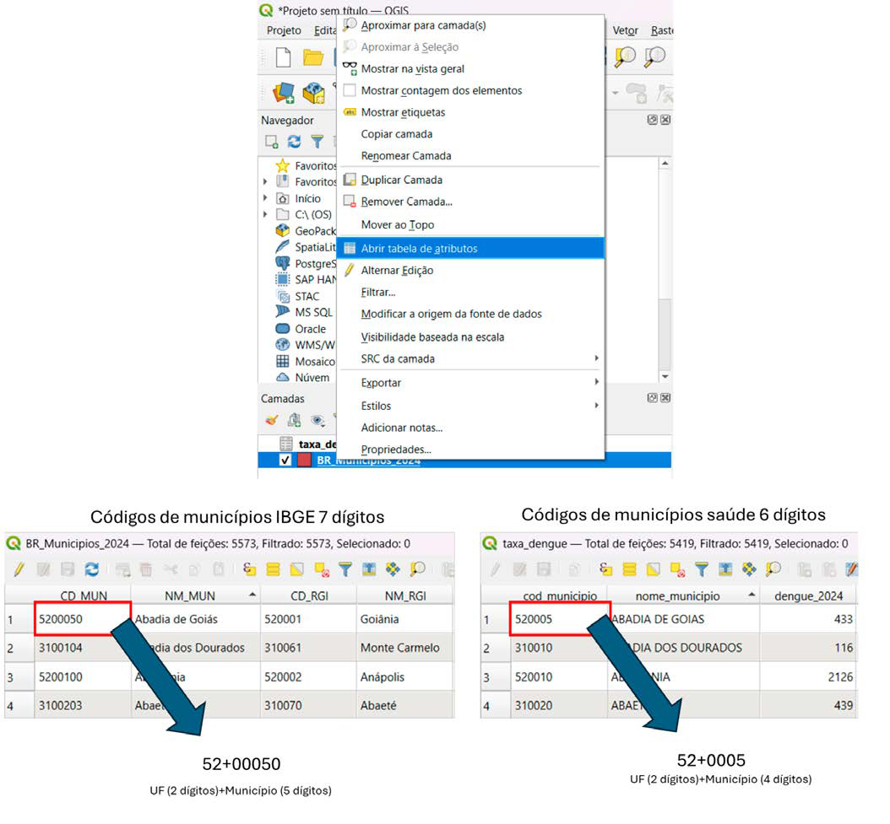
Criar um novo campo com CD_MUN reduzido para 6 dígitos na tabela de atributos no dado espacial BR_Municipios_2024:
- Abra a tabela de atributos: Clique com o botão direito na camada > Abrir Tabela de Atributos;
- Abra a Calculadora de Campos: Ícone da calculadora > Abrir Calculadora de Campos.
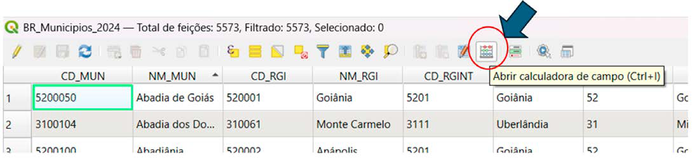
Configure o novo campo:
- Marque Criar um novo campo;
- Nome do campo: CD_MUN6;
- Tipo: Texto (string);
- Comprimento: 6.
Use esta expressão: left("CD_MUN", 6)
- Clique em OK;
- Isso pega apenas os 6 primeiros caracteres do código de 7 dígitos.
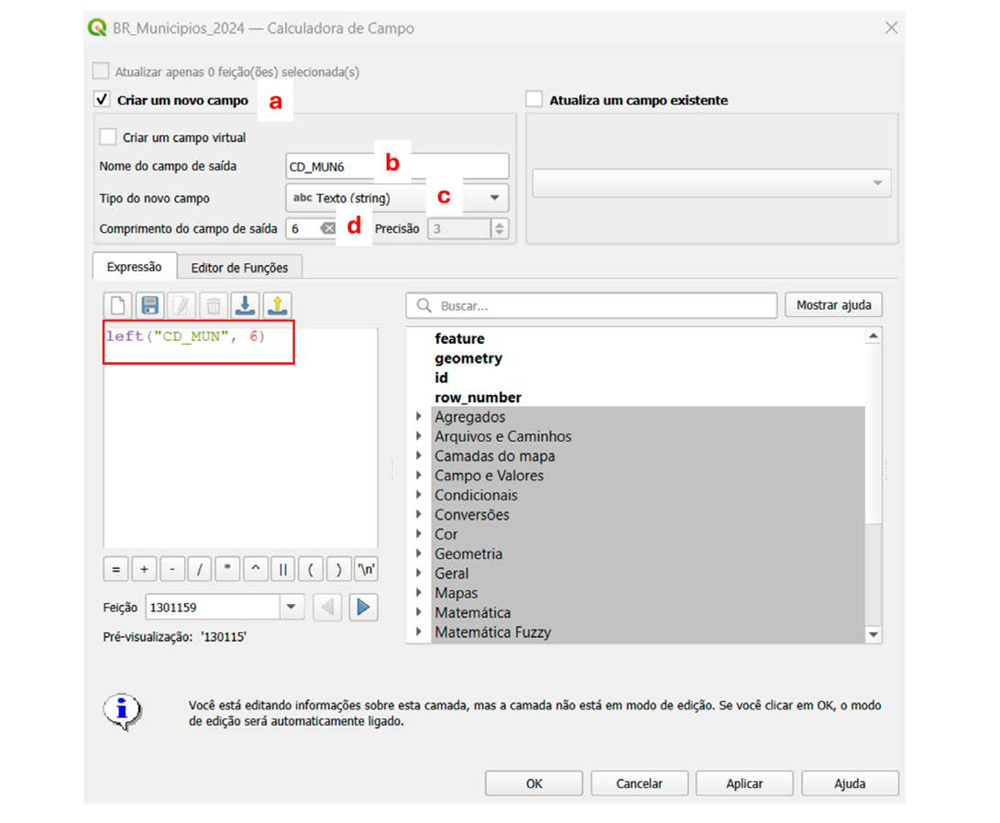
O novo campo é criado de forma temporária. Para salvá-lo na tabela de atributos, vá na barra superior e clique em Salvar alterações . Depois saia do modo de edição clicando ao lado em Alternar modo de edição .
Observe que a coluna do novo campo aparece no final da tabela de atributos.
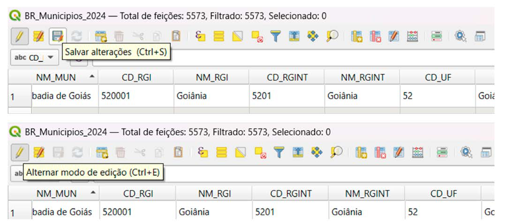
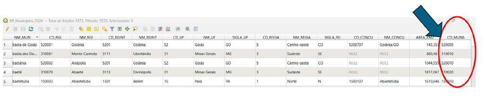